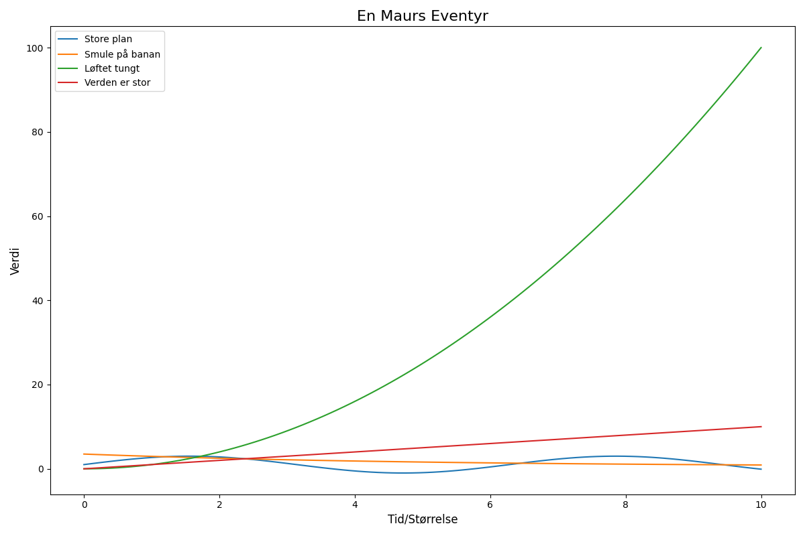

En liten maur med store plan, fant en smule på en banan. Han løftet tungt og gikk i kor, for verden er så veldig stor.

import matplotlib.pyplot as plt
import numpy as np
# Dikt
dikt = """
En liten maur med store plan,
fant en smule på en banan.
Han løftet tungt og gikk i kor,
for verden er så veldig stor.
"""
# Definer data for visualisering
x = np.linspace(0, 10, 100)
y1 = np.sin(x) * 2 + 1 # "store plan" - høyde
y2 = np.exp(-x/5) * 3 + 0.5 # "smule på en banan" - størrelse
y3 = x**2 # "løftet tungt" - masse
y4 = x # "verden er så veldig stor" - størrelse
# Lag figur og akser
fig = plt.figure(figsize=(12, 8))
ax = fig.add_subplot(1, 1, 1)
# Plott data
ax.plot(x, y1, label="Store plan")
ax.plot(x, y2, label="Smule på banan")
ax.plot(x, y3, label="Løftet tungt")
ax.plot(x, y4, label="Verden er stor")
# Legg til tittel og etiketter
ax.set_title("En Maurs Eventyr", fontsize=16)
ax.set_xlabel("Tid/Størrelse", fontsize=12)
ax.set_ylabel("Verdi", fontsize=12)
# Legg til leggende
ax.legend(fontsize=10)
# Juster layout
plt.tight_layout()
# Lagre figuren
plt.savefig(output_path)execution_ok=True fallback_used=False image_ok=True